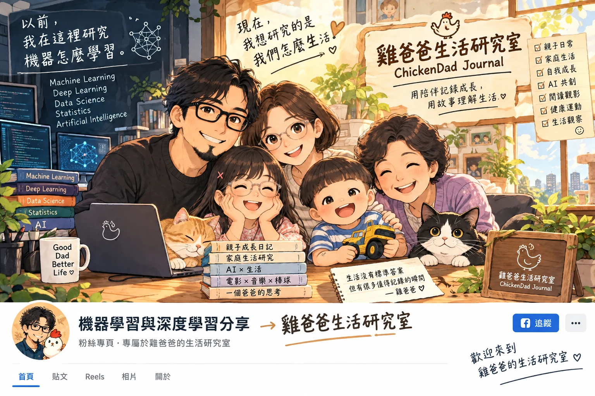

——以前分享機器學習與深度學習，現在想研究的，變成了生活

Facebook不給改名，但不想再從零開始了
最近雞爸爸一直在做一件很累的事情：重新開始。
寫 Vocus 的時候，從第一篇文章開始；開 Instagram，從第一個追蹤者開始。YouTube Shorts，從第一支影片開始；Threads 更精彩，決定好品牌 ChickenDad Journal，結果帳號永久停用，只好再重新弄一個。
每到一個新的平台，雞爸爸都得重新說一次：「大家好，我是雞爸爸。」
重新放第一篇文章、重新介紹鼠媽媽、鼠姊姊、龍弟弟和兔阿嬤；重新告訴演算法，這個戴黑框眼鏡、留著山羊鬍的大叔，到底在寫什麼東西。
做著做著，雞爸爸突然想到一件事：等等，我 Facebook 不是本來就有粉絲專頁嗎？
那是一個還沒有「雞爸爸」以前的自己
很多年前，雞爸爸曾經經營過一個 Facebook 粉絲專頁。名字非常理工男，也非常符合當年的雞爸爸：「機器學習與深度學習資源分享」。
那時候分享的是 Machine Learning、Deep Learning、AI 相關的資料，也慢慢累積了一些粉絲，隨著工作、家庭，後來便沒有繼續認真經營，粉絲專頁就這樣安靜了下來。
直到最近雞爸爸開始整理 Vocus、Instagram、Threads、YouTube 和自己的網站，才突然又想起它，點進去一看，它還在，粉絲數也沒歸零。
甚至因為過去累積的粉絲數，現在還具備一些新開粉絲專頁沒有的功能。雞爸爸盯著螢幕想了一下：既然都已經重新開始這麼多次了，Facebook 可不可以不要再來一次？
於是做了一個很符合中年爸爸節能原則的決定：不要重開，直接拿來用。
然後 Facebook 不同意了
雞爸爸原本覺得事情很簡單，現在既然叫「雞爸爸生活研究室」，那就把：
機器學習與深度學習資源分享 改成：雞爸爸生活研究室 送出...
不行，再試，還是不行。
雞爸爸開始研究 Facebook 的規則，甚至想辦法證明這粉絲專頁還是同一個人在經營，但 Facebook 大概看著前後兩個名字，也陷入了深深的疑惑：
「機器學習與深度學習……跟雞爸爸到底有什麼關係？」
看到這裡，雞爸爸突然也沒那麼生氣了。
因為如果我是 Facebook…好像也會懷疑這個帳號是不是被盜了。
可是仔細想想，我真的變得那麼多嗎？
以前念經濟學，後來念管理科學、統計，後來到資策會學程式，再一路走到工業工程。
從資料分析、找規律、到大數據分析Hadoop、Hive、Spark...是一段值得懷念的時光...
至於Machine Learning、Deep Learning 變成AI應用，雞爸爸還是在做類似的事情...
只是更多時間在研究鼠姊姊為什麼昨天還勇敢得像個大姊姊，今天又突然想當小 Baby。
研究龍弟弟這麼快就發現一句「便便」，可以讓兩個大人半夜從床上爬起來。
研究一個爸爸到了四十幾歲，為什麼突然開始寫文章。
也研究 AI 到底可以怎麼陪一個原本習慣分析的人，一起寫作、畫圖、做網站，把那些原本只是日常的小事情，慢慢整理成故事。
這時雞爸爸發現：我好像沒有真的離開「研究」這件事。
只是以前研究的是資料、模型和演算法，現在研究的是孩子、家庭，還有自己。
以前是 Machine Learning。現在比較像—Life Learning 而且難度好像還高很多。
所以這一次，我不想重新開始
後來雞爸爸決定，Facebook 名字暫時改不了，那就先不要改了。
不是放棄「雞爸爸生活研究室」，恰恰相反，我想直接從今天開始，把雞爸爸的文章放進去，把 Reels 放進去，把這幾個月慢慢長出來的 ChickenDad，一點一點放進去...
直到有一天，當有人點進這個名字還叫「機器學習與深度學習資源分享」的粉絲專頁，看到的卻全部都是雞爸爸的生活時—那好像也滿有趣的。
因為人生本來就不是每換一個階段，就把前面的自己全部刪掉，再按一次：
New Project。
有些東西，我們以為自己早就離開了，走了很久以後才發現，它其實一直留在身上。
雞爸爸以前學分析，後來開始學著感受...
以前研究機器怎麼學習，現在研究孩子怎麼長大，也研究自己怎麼成為一個爸爸...
所以 Facebook 不讓我改名字，好像也沒關係了。
這一次，不要再從零開始...人生本來就是延續著...
就帶上從前的自己，繼續往前。
不免俗的，最後還是歡迎大家來雞爸爸ChickenDad的FB粉絲團坐坐...